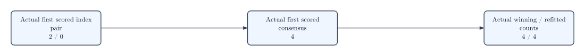
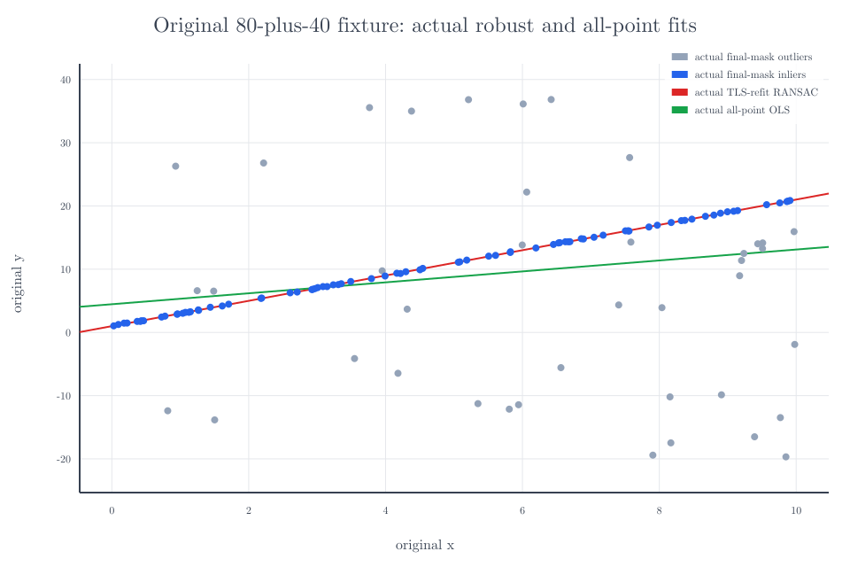
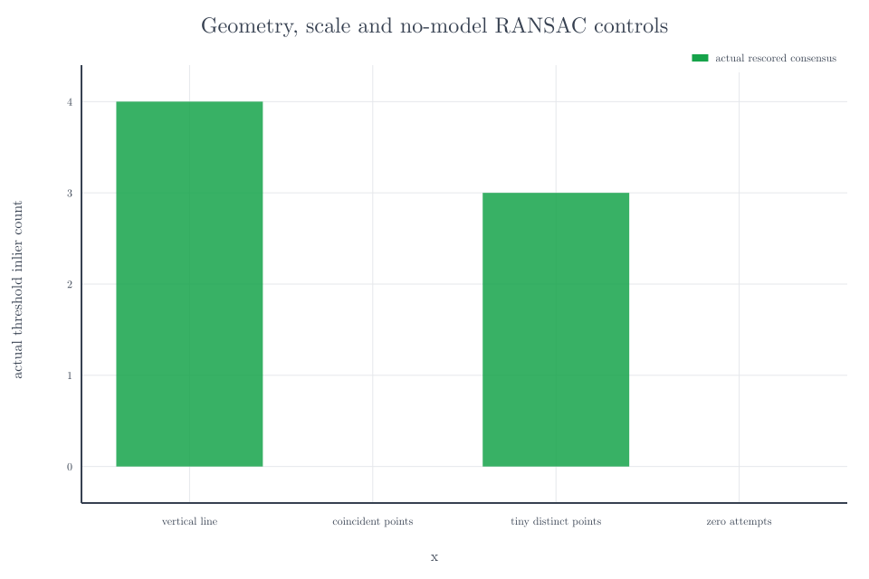
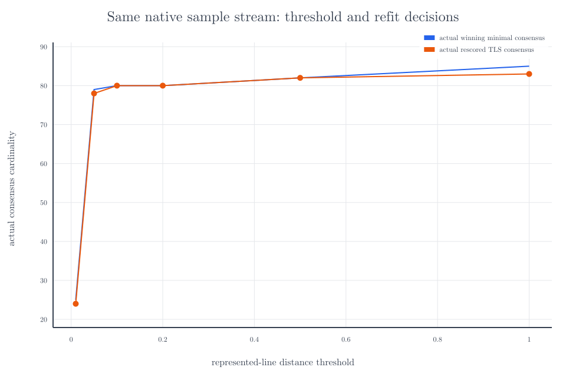

Line RANSAC: actual sampled hypotheses, TLS refits and separately scored consensus
Abstract
Gross outliers can pull an all-point least-squares line away from a dominant geometric relation. RANSAC scores line hypotheses from tiny random samples and refits the best consensus. Actual native index draws and scored masks now expose both skipped trials and real winning hypotheses. The original 80 noisy line points,40 outliers and seeds7/1 remain; pre-refit and post-refit consensus are reported separately.
Mechanism and mathematical scope
A noncoincident pair defines an implicit line normalized so that its residual is a perpendicular distance. A trial consensus is
The native producer retains the first strictly largest minimal-model consensus, then orthogonally refits those points by their principal scatter direction. Refitting changes coefficients, so it rescans the returned line and reports a separate post-refit mask. Returning the old mask with new coefficients would confuse two different decisions.
The familiar ideal independent-sample bound is ceil(log(1-p)/log(1-ws)). This implementation draws two independent indices and skips duplicates. With I known inliers among N stored points, its exact distinct-inlier-pair probability is I(I-1)/N2 before geometric degeneracy. Coincident inlier coordinates or an unsuitable threshold can lower valid-model probability further. No finite positive-success bound exists for zero good-sample probability, and that case now throws rather than returning one trial.
A tiny actual producing history
The table and native concept diagram read the same producing execution. Every block below is a complete editable C++ program.
#include <dm/dm.hpp>
int main() {
namespace a = dm::algorithms;
namespace g = dm::graphics;
std::filesystem::create_directories("build");
auto t =
a::ransac_line_trace({0, 1, 2, 3, 2}, {1, 3, 5, 7, -4}, .05, 20, 1);
const auto it =
std::find_if(t.trials.begin(), t.trials.end(), [](const auto &s) {
return s.kind == a::RansacTrialKind::Scored;
});
const auto &s = *it;
std::print("\n| actual attempt (first8) | first id | second id | kind (duplicate0,coincident1,scored2) " "| consensus | improved |\n| ---: | ---: | ---: | ---: | ---: | --- |\n");
for (std::size_t i = 0; i < std::min<std::size_t>(8, t.trials.size()); ++i) {
const auto &e = t.trials[i];
std::print("| {} | {} | {} | {} | {} | {} |\n", e.iteration, e.first,
e.second, int(e.kind), e.count, e.improved);
}
g::Diagram d;
d.node("n0", {0, 0},
std::format("Actual first scored index pair\n{} / {}", s.first,
s.second));
d.node("n1", {10, 0},
std::format("Actual first scored consensus\n{}", s.count));
d.node("n2", {20, 0},
std::format("Actual winning / refitted counts\n{} / {}",
t.hypothesis.inlier_count, t.line.inlier_count));
d.edge("n0", "n1").edge("n1", "n2");
d.save_svg("build/ransac_tiny.svg");
}| actual attempt (first8) | first id | second id | kind (duplicate0,coincident1,scored2) | consensus | improved |
|---|---|---|---|---|---|
| 0 | 0 | 0 | 0 | 0 | false |
| 1 | 2 | 0 | 2 | 4 | true |
| 2 | 1 | 4 | 2 | 2 | false |
| 3 | 2 | 0 | 2 | 4 | false |
| 4 | 2 | 3 | 2 | 4 | false |
| 5 | 0 | 2 | 2 | 4 | false |
| 6 | 3 | 1 | 2 | 4 | false |
| 7 | 2 | 1 | 2 | 4 | false |

The retained original experiment
#include <dm/dm.hpp>
int main() {
namespace a = dm::algorithms;
namespace g = dm::graphics;
std::filesystem::create_directories("build");
auto data = a::ransac_example_points();
auto t = a::ransac_line_run(data.x, data.y, .2, 500, 1);
dm::Mat<> predictors(data.x.size(), 1);
for (std::size_t i = 0; i < data.x.size(); ++i)
predictors(i, 0) = data.x[i];
const dm::stats::LM ols(data.y, predictors, true);
std::print("\n| original fit | actual slope | actual intercept | actual consensus |\n| --- | ---: | " "---: | ---: |\n| all-point native OLS | {} | {} | not a threshold consensus |\n| winning " "native minimal model | {} | {} | {} |\n| native TLS refit, rescored | {} | {} | {} |\n",
ols.coefficients()[1], ols.coefficients()[0],
-t.hypothesis.a / t.hypothesis.b,
-t.hypothesis.c / t.hypothesis.b, t.hypothesis.inlier_count,
-t.line.a / t.line.b, -t.line.c / t.line.b, t.line.inlier_count);
std::print("Actual attempted pairs500, index draws {}, skipped duplicate ids {}, coincident points {}, " "distance tests {}. Ideal w=.67 bound {}; finite80-of120 distinct-pair bound {}.\n",
t.draws, t.skipped_duplicates, t.skipped_coincident,
t.distance_tests, a::ransac_required_iterations(.67, 2),
a::ransac_pair_iterations(80, 120));
std::vector<double> ix, iy, ox, oy;
for (std::size_t i = 0; i < data.x.size(); ++i)
if (t.line.inliers[i]) {
ix.push_back(data.x[i]);
iy.push_back(data.y[i]);
} else {
ox.push_back(data.x[i]);
oy.push_back(data.y[i]);
}
auto p = g::RPlot::create();
p.points(ox, oy, "actual final-mask outliers", {148, 163, 184}, 4).points(ix, iy, "actual final-mask inliers", {37, 99, 235}, 4).abline(-t.line.c / t.line.b, -t.line.a / t.line.b, {220, 38, 38}, 2).abline(ols.coefficients()[0], ols.coefficients()[1], {22, 163, 74}, 2).legend({"actual final-mask outliers", "actual final-mask inliers", "actual TLS-refit RANSAC", "actual all-point OLS"}, {{148, 163, 184}, {37, 99, 235}, {220, 38, 38}, {22, 163, 74}}).title("Original 80-plus-40 fixture: actual robust and all-point fits").x_label("original x").y_label("original y");
p.save_svg("build/ransac_original.svg");
}| original fit | actual slope | actual intercept | actual consensus |
|---|---|---|---|
| all-point native OLS | 0.8650863056307673 | 4.462022715199357 | not a threshold consensus |
| winning native minimal model | 1.9873571777951002 | 1.0843746246912054 | 80 |
| native TLS refit, rescored | 2.0018106397240176 | 0.995737352961313 | 80 |
Actual attempted pairs500, index draws 1000, skipped duplicate ids 4, coincident points 0, distance tests 59640. Ideal w=.67 bound 8; finite80-of120 distinct-pair bound 8.

Explicit controls
#include <dm/dm.hpp>
int main() {
namespace a = dm::algorithms;
namespace g = dm::graphics;
std::filesystem::create_directories("build");
const std::vector<std::vector<double>> xs{{2, 2, 2, 2}, {1, 1},
{0, 1e-20, 2e-20}, {0, 1, 2}}, ys{
{0, 1, 2, 3}, {2, 2}, {0, 0, 0}, {1, 3, 5}
};
const std::vector<std::string> labels{"vertical line", "coincident points",
"tiny distinct points",
"zero attempts"};
std::vector<double> counts;
std::print("\n| actual control | found | actual pre-refit consensus | actual final consensus | actual " "draws |\n| --- | --- | ---: | ---: | ---: |\n");
for (std::size_t i = 0; i < xs.size(); ++i) {
auto t =
a::ransac_line_run(xs[i], ys[i], i == 2 ? 1e-25 : .01,
i == 3 ? 0 : 50, 1);
counts.push_back(t.line.inlier_count);
std::print("| {} | {} | {} | {} | {} |\n", labels[i], t.found,
t.hypothesis.inlier_count, t.line.inlier_count, t.draws);
}
bool impossible = false;
try {
a::ransac_required_iterations(0, 2);
} catch (const std::domain_error &) {
impossible = true;
}
std::print("Zero inlier-probability positive-success bound rejects: {}. Exact2-of2 distinct-index " "attempt bound: {}.\n",
impossible, a::ransac_pair_iterations(2, 2));
auto p = g::RPlot::barplot(counts, labels, "actual rescored consensus");
p.title("Geometry, scale and no-model RANSAC controls").y_label(
"actual threshold inlier count");
p.save_svg("build/ransac_controls.svg");
}| actual control | found | actual pre-refit consensus | actual final consensus | actual draws |
|---|---|---|---|---|
| vertical line | true | 4 | 4 | 100 |
| coincident points | false | 0 | 0 | 100 |
| tiny distinct points | true | 3 | 3 | 100 |
| zero attempts | false | 0 | 0 | 0 |
Zero inlier-probability positive-success bound rejects: true. Exact2-of2 distinct-index attempt bound: 7.

Actual selected work and sensitivity
#include <dm/dm.hpp>
int main() {
namespace a = dm::algorithms;
namespace g = dm::graphics;
std::filesystem::create_directories("build");
auto data = a::ransac_example_points();
std::vector<double> x, y, z;
std::print("\n| explicit threshold | actual winning minimal count | actual rescored TLS count | actual " "distance tests |\n| ---: | ---: | ---: | ---: |\n");
for (double threshold : {.01, .05, .1, .2, .5, 1.}) {
auto t = a::ransac_line_run(data.x, data.y, threshold, 500, 1);
x.push_back(threshold);
y.push_back(t.hypothesis.inlier_count);
z.push_back(t.line.inlier_count);
std::print("| {} | {} | {} | {} |\n", threshold,
t.hypothesis.inlier_count, t.line.inlier_count,
t.distance_tests);
}
auto p = g::RPlot::create();
p.lines(x, y, "actual winning minimal consensus", {37, 99, 235}).lines(
x, z, "actual rescored TLS consensus", {234, 88, 12}).points(
x, z, {234, 88, 12}, 5).title("Same native sample stream: threshold and refit decisions").x_label("represented-line distance threshold").y_label("actual consensus cardinality");
p.save_svg("build/ransac_work.svg");
}| explicit threshold | actual winning minimal count | actual rescored TLS count | actual distance tests |
|---|---|---|---|
| 0.01 | 25 | 24 | 59640 |
| 0.05 | 79 | 78 | 59640 |
| 0.1 | 80 | 80 | 59640 |
| 0.2 | 80 | 80 | 59640 |
| 0.5 | 82 | 82 | 59640 |
| 1 | 85 | 83 | 59640 |

API and interpretation
Generation labels identify how the synthetic points were constructed, not guaranteed threshold membership. The displayed final inlier mask is explicitly rescored against the returned TLS coefficients. The all-point OLS baseline uses the canonical native LM API, replacing report-local sums and normal equations. Duplicate-index attempts count toward the requested trials but do not score a model. Distinct tiny points are no longer discarded solely by a fixed absolute1e-12 norm cutoff. Finite widened arithmetic improves range handling without claiming exact floating geometric classification; unrepresentable diagnostics throw. Threshold sensitivity on one fixture is descriptive, not held-out hyperparameter validation.
Reusable producers, fixtures and histories live in the canonical C++ library. Captured records own their values and do not come from a separate report replay. Selected counters and record/scalar policies are specified at their API boundaries; they are not peak-byte or wall-time budgets. Synthetic structural inputs are controlled fixtures for these mechanisms.
References
Verification: 214 scoped native cases;15 directly instrumented ASan/UBSan
cases;127 executable public examples;567/567 full-file definitions;10
hovers;1340 independent records/58514 checks;frozen compatibility across six
changed legacy families;independent NumPy tensor-training comparisons with
recorded tolerances;12 checkout/installed standalone headers and linked
consumer;41 executed programs and41 inspected figures with both exports.
Receipts: build/mepml-conversion/batch-314-323/.